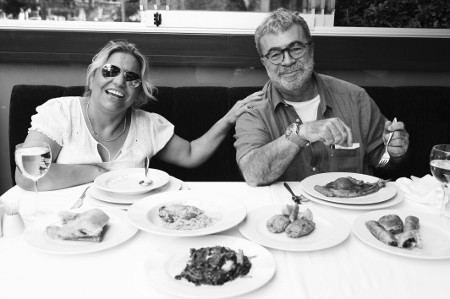

“Evimin hizmetçisiyim, kölesiyim”
Yemekle aranız nasıl?
Yemekle aram sonsuz iyidir. Yemek yemeyi çok severim. Zaten halimden bellidir. Kendimi övmek gibi olmasın, ama güzel yemek yaparım. Yemek yapmaya, dikiş dikmeye, misafir ağırlamaya benim çok fazla hevesim var. Ben yemek yapmayı annemden ya da sağdan soldan öğrenmedim. Yemek tariflerini Esra Ceyhan’ın programındaki Ayşe Tüter diye bir kadıncağızdan öğrendim. Ümit Usta’dan tarif aldım, Recep Bey’den öğrendim. Özellikle gençlerden değil, ama büyük ablalardan, kendi yaşımda olan insanlardan tarif almayı severim. Onlar becerikli insanlardır. Hele de çocuğu olan insanlar daha da beceriklidir. Ben hep onları örnek aldım, annemi de örnek aldım ama pek olmadı. Annem bana kıyamıyordu, “Kızım sen para kazanıyorsun, yorulursun çocuğum” der hiçbir iş yaptırmazdı. Onun için annemden fazla bir şey öğrenmedim. Televizyondaki yemek programlarından çok şey öğrendim.
Tarifleri televizyondan mı yazıyordunuz?
O zaman okumam yazmam yoktu, ben not edemiyordum. Yanımda çalışanlara yazdırıyordum. Bülent Ersoy benim köfteme âşıktır. Biz buna Roman köftesi diyoruz. İçine kimyon, soğan, sarmısak, karabiber, pulbiber, nane, maydanoz, ekmek içi, yumurta, hafif kabartma tozu koyuyorum. Yoğurup köfte haline getirdikten sonra biraz kızartıyorum. Sonra üzerine biraz yumurta sürüp biber ve patlıcanla fırına atıyorum. Romanlarda bu köfte çok meşhurdur, ekmeğini banarak yiyeceksin, vallahi canım çekti şimdi.
Çocukluğunuzda da iştahınız yerinde miydi?
O zamanlar kırk beş kilo bile değildim. Fakirlik vardı, yemek yoktu, para yoktu ki yemek olsun. Annem et alamazdı, bize ekmek köftesi yapardı. Sadece ekmek yiyordum o zaman. Ama ne zaman doğum yaptım, kilo almaya başladım. Fakirlikte yok öyle sebzeler, dolmalar; annem ne yapıyorsa onu yiyorduk. Taş yapsa taş yerdik.
Anneniz iyi yemek yapar mıydı?
Annem çok ustadır. En güzel yaptığı yemek, kuru fasulyedir. Kuru fasulye fakir yemeğidir derler. Bence zengin yemeğidir, çünkü çok vitaminlidir. Annem bir de tarhana çorbasını çok güzel yapar. İnsan biraz paralanınca bol kıymalı, pirinçli, nar ekşili dolma yapar. Musakka, karnıyarık, pilav; bizim gacı her şeyi aşırı güzel yapar. Belki de annem olduğu için güzel geliyordur. Gacı 75 yaşında, hâlâ yemek yapıyor. Ne zaman ziyaretine gitsem, ben ona hizmet edeceğime o bana hizmet ediyor. Eski kadınlar becerikli oluyor. Bir damla yağda muhteşem bir patates kızartır. Para olunca pastırmalı, kuşbaşı etli, orijinal zeytinyağlı yemekler yapar, para olmayınca da sade suya tirit...
Çocukken en sevdiğiniz yemek hangisiydi?
Yine kuru fasulye, aşırı derecede severdim. Annem kırk sekiz saat verse yerdim, hâlâ da seviyorum, ama bu aralar pek yiyemiyorum, dokunuyor. Mideden kaynaklanan asidim var, yesem beni hastanelik yapar. Kuru fasulye gibi bir yemek olamaz; hem fiyatı uygun, hem lezzetli, hem proteinli. Kıymalı patatesi süper yaparım. Herkes lezzet versin diye kıymayı doldurur. Ben kıymayı az koyarım, soğanı iki tane atarım içine, çarliston biber doğrarım, yanına biber salçası, azıcık da domates salçası, yeme de yanında yat. Bamyayı da çok severim. Acıyı aşırı severim, tansiyonum olduğu halde aşırı acı yiyorum, sonra da mideden acı çekiyorum. Yüzümden ateş çıkıyor, ama maşallah yine de yiyorum.
Mahallede o zamanlar konu komşudan iyi yemek yapan var mıydı, gidip sorar mıydınız?
Yemek öğrenmeye zamanım yoktu, pavyonda çalışıyordum. Evde annemle oturup da hiç muhabbet edemiyordum, devamlı para kazanıyordum. Ben para kazanacağım ki annem yemek yapsın. Komşularımız çok güzel yemek yaparlardı. Ama ben o zamanlar paranın peşindeydim. Onun için o yaşlarda bir şey öğrenemedim. Annem bana, “Siz siz olun, evlendiğiniz zaman kocalarınıza, eşinize dostunuza hem yemek olarak, hem saygı sevgi olarak, hürmet olarak, kusur etmeyin” derdi. Ben annemden sadece bunları öğrendim. Bunları da uyguluyorum, bu yüzden başarılıyım da; sevenim de çok Allah’a şükür.
Babanız mutfağa girer miydi?
Babam çok güzel yemek yapardı. Babamdan taze fasulye yapmayı öğrenmiştim o zamanlar. “Kıymalı yapma kızım, zeytinyağlı yap, en güzeli odur” derdi. Dört tane soğan rendele, biberi ihmal etme, onu babamdan öğrendim. Babam anneme yardımcı olurdu hep. Her koca öyle olsa keşke. Şimdikiler bir bardağı şuradan şuraya kaldırmıyorlar. Mesela, benim kocam mutfağa girmez, kırk yılın başı bir tost yapar.
Evde yemeği siz mi yapıyorsunuz?
Tabii ben yapıyorum. Yemeğimi de, temizliğimi de ben yapıyorum. Kadın geldi, kadını beğenmedim, dandikten yapıyor, kalbini kırmadım ama pasaportunu verdim. Kendime bakmadığım kadar evime bakıyorum.
Kızınız en çok neyi seviyor?
Bütün çocuklar gibi patates kızartması, köfte, pilav, zeytinyağlı taze fasulye, börek, sarmısaklı yoğurt sever. Hazır yufkayla börek yapıyorum ona. Çok yoğunum, ancak bu kadarına fırsatım oluyor. Hazır yufkayla mantı bile yapıyorum. Kızım bana çekmiş, pek et sevmiyor. Çok yoğunum ama vallahi yemeğimi kendim yapıyorum; hazırlayıp dolaba koyuyorum, bir zeytinyağlı, bir etli, sonra doğru çalışmaya. Ben evimin hizmetçisiyim, kölesiyim.
Roman mutfağının en sevilen yemeği hangisidir?
Domates, biber kızartması, üstüne sarmısaklı yoğurt. Romanlar bunu aşırı severler. Kuru patlıcan dolması, mercimek, kuru fasulye. Yirmi tane ekmek alınır, bir koca tencere kuru fasulyeyle hepsi yenir. Ekmeğe çok alışkınız biz. Hâlâ en kral yere gitsem ekmeksiz doymam.
Yemek yaparken şarkı söylüyor musunuz?
Hem de çook. Komşular bıkmıştır benim sesimden. Ben arabesk müzikten çok Türk sanat müziğini severim. “Köle ol” deseler, Türk sanat müziğine köle olurum. Ben Müzeyyen Senar, Safiye Ayla, Hamiyet Yüceses, Zeki Müren, Bülent Ersoy, Gönül Akkor, Münir Nurettin Selçuk gibi sanatçılarımızın hastasıyım. Komşularımın bazıları bıkıyor, “Kibariye Hanım çocuk uyuyor, biraz yavaş olur musunuz?” diyorlar. Ne başkalarını rahatsız etmekten hoşlanırım, ne de rahatsız edilmekten. Birbirimize saygılı olmalıyız, ben ailemden böyle öğrendim.
Tatlıyla aranız nasıl?
Çok seviyorum abi. Şu anda yetmiş kiloya yakınım. Tatlılardan çok kilo aldım. En sevdiğim tatlılar Kemalpaşa tatlısı, irmik helvası, bir de inanılmaz derecede sevdiğim kadayıftır. Hazır tatlı yaparım. Hamur açmak gerekirse açarım, çiğbörek bile açarım. Ben çok becerikli gacıyımdır. Sen bana kendini bırak hemen şişmanlarsın.
Yemeye doymadığınız yemek hangisi? Kuru fasulye mi?
Hayır; domates, biber, patlıcan kızartması. Yanında patates ve bol sarmısaklı yoğurt. Ben buna ölürüm, sahneye çıkartsınlar orada bile yerim. Yaprak sarmasını sevmem o kadar, tansiyonuma dokunuyor. Ispanak beni rahatsız ediyor. Enginar, kereviz, lahana dolmasını severim.
İçkiyle aranız nasıl?
Kuran evliya çarpsın, hiçbir zaman içmedim. İçkiyi de, sigarayı da bugüne kadar asla içmedim. Bunu bütün dünya bilir.
Hangi yemekten nefret edersiniz?
En nefret ettiğim yemek soğan yahnisidir. Midemi bulandırıyor. Bir de yumurtalı ıspanak yapıldığı zaman bir tuhaf kokusu oluyor, bunu da sevmem. Onun haricinde her şeyi severim.
Sokak yemekleriyle aranız nasıl?
KFC, KFC, KFC!..
KFC nedir?
Kızarmış tavuk butları var ya onlar işte, onu severim. Kokareç, içi alınmış ekmeğin içine biraz soğan, biraz biber, kızarmış kokareç... Ohh öyle güzel oluyor ki ekmek arası köfteler, kokareçler... Allah... Balığı sevmiyorum. Herkes balığa bayılıyor, ama ben pek sevmiyorum. Hamur işinde mantı tercihimdir, çok yememeye çalışıyorum. Yaş geldi kemale, boy da küçük, çabuk kilo alıyorum, onun için dikkat ediyorum. Pirinç ve bulgur pilavını aşırı severim. Kilo aldırdığı halde pilavdan vazgeçemiyorum.
Tabağınızı sıyırır mısınız, salatanın içine şamandıra atar mısınız?
Aşırı derecede atarım. En lezzetli yer tabağın dibidir. Dışarı yemeğe çıktığımda, hayranlarım bana baktığı zaman yemek yiyemiyorum, utanıyorum. Masadan aç kalkıyorum. Eve gidip yemeğin suyuna şamandıraları atıyorum, tabağın dibini de sıyırıyorum. Hem de beş parmakla, on parmakla, ohh!.. Onun için böyle oldum.
Ne tür lokantalara gidersiniz?
Hangisi meşhursa ona gidiyorum. En çok da bizim yakadaki Köy Pub’a gidiyorum. Bir de Kalamış Koyu’ndaki Develi’yi seviyorum. Ayrıca KFC’yi aşırı severim.
Bir günlük yemek maceranızı anlatır mısınız?
Sabah kahvaltımı kendim hazırlıyorum. Hazırlarken zevk almıyorum. Söylemesi ayıp tereyağı, biber, domates, kuru soğan, siyah orijinal zeytin, azıcık yeşil zeytin, çilek reçeli, bal, pastırma, haşlanmış yumurta, kızarmış salam, sosis, kızarmış ekmek olacak. İsteyene yumurta kırarım, menemen yaparım.
Kahvaltı masanız maşallah ziyafet sofrası gibi...
Ama biz kalabalığız. İzmir’den, Bursa’dan, Almanya’dan eşimin tayfaları yatılı gelirler. Benimkiler de gelir. Allah eksik etmesin, iyi insancıklar. Masada hem acı, hem tatlı bol yeşil biber olmazsa olmaz. Cevizimi, kaymağımı da koyarım. Dışarıda kahvaltıda masaya ne koyuyorlarsa, oradan görürüm, hepsinden koyarım masama. Hiç kimseyi muhtaç etmeyecek kadar yaparım, yani. Öğle yemeğinde aperatif şeyleri severim. Sarmısaklı yoğurtlu makarna, istiyorlarsa yanına hazırdan kadınbudu köfte koyarım. Kendim de yaparım, ama acelem varsa o zaman hazırını alırım. Püre yaparım, şnitzel yaparım, o kadarcık yani. Akşam bazen et, kebap, bazen kahvaltı türü, menemen, sosis kızartırım. Hiç oturmam, o yüzden vitamin kullanırım.

Sahneye aç mı tok mu çıkarsınız?
Yemeğimi yerim, çayımı, kahvemi içerim, sonra da sahneye çıkarım. Bazıları tok karnına sahneye çıkamadığını söyler. Allah onun kuvvetini, azmini veriyor. Ben aç karnına çıkamam, yok anam yok...
Hangi yemeği yemek sizi mutlu eder?
Aperatif yemekler. Domatesimi keserim, biberimi de koyarım, soğan, teneke peynir, iki dilim ekmecik, bir de çay, en güzel şey. Ben böyle bir kadınım işte.
Rejim yapar mısınız?
Bu aralar yapıyorum. Çok hoşuma gitmiyor böyle kilolu olmak. Giydiğin yakışmıyor, terliyorsun. Ben doktora da danışmıyorum, ilaç da kullanmıyorum. En güzeli yürüyüş. Deniz kenarından, sahilden eve kadar yürüyüş yapıyorum. Aşırı su içiyorum; ekmeği, hamur işini kestim. Hiç boş durmuyorum, kırk sekiz saat çalışabilirim. Ailecek hepimizin rejime ihtiyacı var, o yüzden her şeyi kestim. Kendi adıma domates, maydanoz, nane, soğan –hiçbir zaman eksik etmem soğanımı–, bir dilim kepek ekmeği, domates bunlar bana yetiyor. Tuzu, şekeri kestim. KFC’de bir porsiyona sekiz parça veriyorlar, ben üç tane istiyorum. Şükürler olsun, iki kilo verdim.
Turnelerde nasıl besleniyorsunuz?
Turnelerde de ayaküstü yiyoruz; kavun, karpuz, beyazpeynir, kaşar. Denk gelirse kebabını yiyorsun, denk gelmezse domates, peynirle idare ediyoruz. Açıkçası ben turnelerde ekmek arası bir şeyler yemeyi tercih ediyorum.
(12 Eylül 2010)
| KİBARİYE'DEN KURU FASULYE VE PEYNİRLİ MUSAKKA Kuru fasulye Kuru fasulyeyi bir gece önceden suya koyar, sabaha kadar bekletirim. Sabah birkaç su yıkayıp kaynatırım. İçine üç baş soğan, üç dört tane acı biber atıp bir güzel kaynatırım. İyice kaynadıktan sonra kuşbaşı et, kimyon, kırmızıbiber, pulbiber, salça ve domatesi bir tavada kavururum. Kuru fasulyeyi süzerim, kevgirden geçirdikten sonra bir fincan orijinal zeytinyağı koyarım. Sonra hazırladığım sosu döküp iki tık daha kaynatırım. Peynirli musakka Patlıcanları parmak patates gibi doğrayıp kızartırım. Sonra peçeteye koyup yağını alırım. Kıymasını, soğanını, karabiberini, tuzunu, nanesini hep beraber kavururum. Bir tepsiye patlıcanları koyarım, malzemeyi de üstüne döküp fırına veririm. Fırından çıkardıktan sonra, üzerine kaşar rendeleyip yine fırına veririm. Peynirler eriyince çıkartırım. |